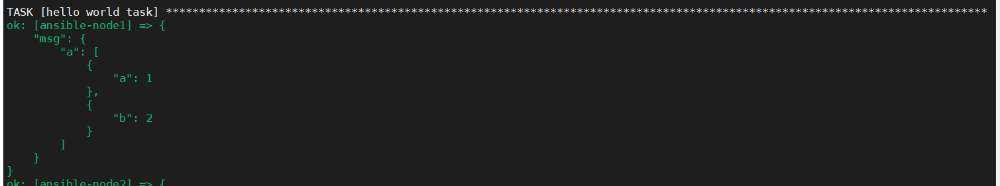

定义变量
定义方式：
vars属性进行定义
与hosts同一级别
- name: Hello world
hosts: web1
vars:
greeting: "hello from vars"
tasks:
...
外部引入变量
- name: test play var from file
hosts: all
var_file:
- vars/users.yml
tasks:
...
使用变量
使用Jinj2模板语言，进行引用，使用大括号与双引号。
为什么需要使用双引号？
这样错误的主要原因是PlayBook 是YAML 的⽂件格式， 当Ansible 分析YAML ⽂件时，有可能会误认为字典。 name: 是⼀个字典的开始。因此加针对变量的使⽤，加 上了双引号，避免Ansible错误解析。
- name: Hello world
hosts: web1
vars_files:
- vars_file/vars/demo.yaml
vars:
greeting: "hello from vars"
tasks:
- name: hello world task
debug:
msg: ""
定义的变量可以在tasks中被引用。

变量也可以定义字典和数组
- name: Hello world
hosts: web1
vars:
greeting: "hello from vars"
demo:
a:
- a: 1
- b: 2
tasks:
- name: hello world task
debug:
msg: ""

变量也可以通过外部进行导入变量
- name: Hello world
hosts: web1
vars_files:
- vars_file/vars/demo.yaml
vars:
greeting: "hello from vars"
tasks:
- name: hello world task
debug:
msg: ""
这样子的好处就是统一管理变量
变量优先级：
简单的来说就是后面覆盖前面。
两种情况，
- 变量都在文件中，前面文件中的变量会被后面文件中定义的相同的变量覆盖
- 外部引用的文件中的变量会被自己文件中后面定义的变量覆盖掉。